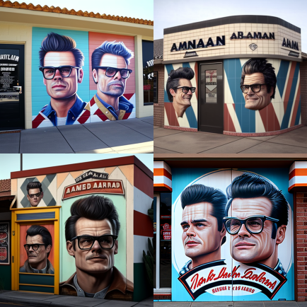

Você poderia esperar encontrar cadeiras de barbeiro personalizadas, todas com o logotipo do Jackass, bem como adereços e equipamentos únicos, como skateboards, tambores e até mesmo uma réplica da famosa bola de demolição usada em um dos episódios mais icônicos.
Os barbeiros seriam escolhidos por sua personalidade e habilidade em cortar cabelo, mas também por sua capacidade de se envolver com os clientes e ajudá-los a se divertir. Como todos sabemos, o programa Jackass era conhecido por suas brincadeiras e golpes loucos, então você pode esperar que a equipe da barbearia tenha o mesmo senso de humor irreverente. Os clientes teriam a oportunidade de experimentar cortes de cabelo e barbas personalizados, bem como se envolver em brincadeiras e desafios temáticos do programa. Os barbeiros podem desafiar os clientes a realizar algumas das brincadeiras mais icônicas do programa, como andar de carrinho de supermercado, saltar em um tanque cheio de água ou até mesmo realizar uma corrida de carrinhos de mão.Além de tudo isso, a barberia com tema Jackass seria um lugar onde as pessoas se sentiriam acolhidas e divertidas. Os clientes poderiam conversar sobre os episódios favoritos do programa e compartilhar suas próprias histórias malucas.
